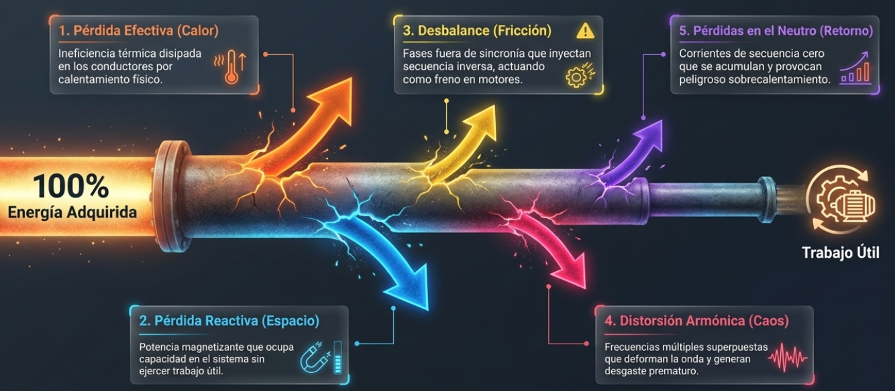

Vol. 01 · Nº 04Edición técnica · Abril 2026Lectura · 9 min
Método de Potencia Unificada (UPM)
Cuando las pérdidas eléctricas dejan de ser un porcentaje abstracto y se convierten en dinero.
Del marco clásico de Steinmetz a la norma IEEE 1459, la industria acumuló un siglo de
teoría para describir la ineficiencia eléctrica. El UPM la traduce, por primera vez, a
cinco categorías físicas medibles —y a un costo anual en divisas.
Por · Eduardo Jara G.Tema · Eficiencia industrial
Figura 01 · Flujo energético
Las cinco fugas entre la red y el trabajo útil

El UPM rastrea el 100 % de la energía que ingresa desde la red y discrimina, punto por punto, por dónde se fuga antes de convertirse en trabajo útil.
§ 01 Un siglo de teoría de potencias
Charles P. Steinmetz
Autor, en 1897, de la teoría clásica de potencias activa y reactiva.
El panorama eléctrico a nivel industrial ha experimentado una transformación
profunda y definitiva a lo largo de las últimas décadas. En el pasado, los sistemas
eléctricos operaban mayoritariamente con ondas sinusoidales limpias y alimentaban
cargas lineales, como motores de inducción y lámparas incandescentes. Bajo aquellas
condiciones ideales, la teoría clásica de potencias desarrollada por
Charles Proteus Steinmetz en 1897 describía perfectamente el
comportamiento del sistema.
Esta teoría clásica separaba claramente la potencia activa, que
oscila positivamente y representa el trabajo útil, de la potencia reactiva,
que oscila simétricamente y no produce un trabajo neto. Sin embargo, el presente
industrial está dominado por cargas no lineales —variadores de
frecuencia, fuentes conmutadas, luminarias LED y sistemas UPS—. Estas cargas inyectan
corrientes armónicas y generan asimetrías que los medidores convencionales de 50 Hz
son incapaces de capturar con precisión, dejando la teoría clásica obsoleta frente a
las deformaciones de onda reales.
Durante mucho tiempo la industria dependió de esfuerzos como los de
Fortescue en 1918, quien introdujo el método de las
componentes simétricas para analizar el desbalance descomponiendo el sistema
en secuencias directas, inversas y cero. Más recientemente, la norma
IEEE 1459 (actualizada en 2010) intentó unificar las diferentes
teorías en un marco coherente para evaluar la calidad de energía en presencia de
distorsión y desequilibrio.
§ 02 La brecha entre IEEE 1459 y la planta
Aunque la IEEE 1459 es matemáticamente rigurosa y exhaustiva, define numerosos
parámetros abstractos que resultan complejos de interpretar en la práctica industrial.
El resultado es predecible: informes densos en variables que rara vez se traducen en
acciones concretas de mitigación en el campo.
“El UPM toma la rigurosidad matemática de la norma IEEE 1459 y la traduce a un marco
intuitivo que desglosa las ineficiencias energéticas en categorías con un sentido físico
inmediato.”
Método de Potencia Unificada · Fluke × UPV
Para resolver esa brecha surgió el Método de Potencia Unificada (UPM),
desarrollado en colaboración entre Fluke y la
Universidad Politécnica de Valencia. El método fue patentado e
integrado como la función Calculadora de Pérdidas de Energía (ELC) dentro de
los analizadores de calidad eléctrica de la serie 1770, específicamente en los modelos
1775 y 1777.
100%
Energía adquirida trazada por el método
5
Factores físicos de pérdida
3
Vías para ingresar la resistencia de línea
1USD
Unidad de reporte final del análisis
§ 03 Los cinco factores del UPM
El gran aporte del UPM es que rastrea el 100 % de la energía adquirida desde la red
eléctrica y discrimina exactamente por dónde se fuga antes de
convertirse en trabajo útil, dividiendo las pérdidas en cinco factores clave:
01
Pérdida efectiva
Calentamiento de línea · I²R
Ineficiencia térmica producida cuando la energía disipa calor físico al
transportarse por los conductores desde la fuente hasta la carga.
Mitigación · redimensionar cable o instalar conductores en paralelo
02
Pérdida reactiva
Potencia magnetizante
Ocupa espacio y capacidad en el sistema eléctrico pero no ejerce trabajo —como la
espuma en un vaso de cerveza—. Aparece típicamente junto a motores y
transformadores.
Mitigación · corrección activa del factor de potencia
03
Desbalance
Asimetría trifásica
Ocurre cuando las tres fases no comparten la misma amplitud ni conservan su
desfase ideal de 120°. Inyecta una secuencia inversa que actúa frenando los
motores y causa ineficiencia severa.
Distorsión armónica
Cargas no lineales · 150, 250 Hz…
Cargas no lineales superponen frecuencias múltiples a la fundamental,
deformando visiblemente la onda. Genera calentamiento severo y desgaste
prematuro en transformadores y cables.
Mitigación · filtros armónicos pasivos o activos
05
Pérdidas en el neutro
Secuencia cero · retorno
Corrientes de retorno originadas por componentes de secuencia cero —tanto por
desbalances como por armónicos— que se acumulan en el conductor neutro y pueden
provocar sobrecalentamiento peligroso.
Mitigación · aumentar la sección del cable neutro
§ 04 Configurar la resistencia de línea
Figura 02Caracterización en campo: el analizador se conecta directamente al tablero mientras el equipo está en operación. La calidad del dato de entrada —y, sobre todo, de la resistencia de línea— determina la fidelidad del diagnóstico económico posterior.
Para que la Calculadora de Pérdidas de Energía opere correctamente, el ingeniero debe
configurar adecuadamente las especificaciones del sistema. El parámetro más crítico es
la resistencia de la línea. El UPM admite ingresarlo por tres vías,
cada una con un compromiso distinto entre rapidez y precisión:
#
Vía de ingreso
Descripción · precisión
01
Estimación por disyuntor
Se deriva del amperaje máximo del interruptor de protección. Rápido, pero con una banda amplia de incertidumbre. Útil para tamizar rápido varias líneas.
02
Cálculo por conductor
Se ingresan material, sección transversal y longitud del cable. Entrega un valor teórico coherente con el diseño de la instalación.
03
Medición directa
Se introduce el valor obtenido con un miliohmímetro de precisión. Es la opción más exacta y la recomendada para diagnósticos monetizados.
Con la resistencia bien caracterizada, el algoritmo es capaz de determinar si el origen
de las pérdidas proviene intrínsecamente del lado de la acometida
(fuente) o de los conductores internos de la instalación (línea). Esa
distinción, en la práctica, decide si el interlocutor es la distribuidora o el propio
equipo de mantenimiento interno.
§ 05 Traducir físicas en dólares
Figura 03Pantalla Energy Loss Overview del Fluke 1777. El ELC separa Total Loss en Line Loss (conductores internos) y Source Loss (acometida), y detalla cada una de las cinco categorías con su equivalente energético anual en kWh/año.
El aspecto más disruptivo de la implementación del UPM en el software de los equipos es
su capacidad de monetizar directamente las fallas técnicas. Al
introducir la tarifa eléctrica que paga la planta —el valor en divisas locales por
kWh—, la calculadora proyecta el costo económico anual de cada uno de los cinco
fenómenos de pérdida.
En lugar de entregar un porcentaje abstracto de distorsión (THD), el equipo muestra con
precisión cuántos miles de dólares al año se desperdician exclusivamente por
culpa de los armónicos frente al desbalance, o cuánto pesa el calentamiento de
línea frente a la reactiva. El reporte deja de ser un documento para especialistas y se
convierte en un presupuesto.
§ 06 ROI, ISO 50001 y decisiones
Este nivel de visibilidad financiera transforma los reportes de calidad eléctrica en
herramientas de alto impacto gerencial. Facilita el cálculo del
Retorno de Inversión (ROI) necesario para justificar la compra de
activos de mitigación —filtros activos, bancos de condensadores, modernización de
infraestructura— porque el ahorro proyectado ya viene expresado en la misma unidad que
la cotización del proveedor.
Finalmente, la adopción del Método de Potencia Unificada resulta indispensable para
aquellas organizaciones comerciales e industriales que persiguen el cumplimiento de
normativas estrictas como la ISO 50001, aportando un diagnóstico
exacto, inteligente y rentable sobre la eficiencia y la gestión de sus recursos
energéticos.